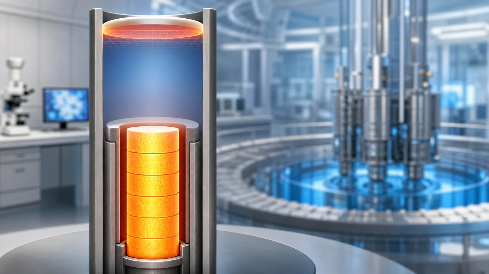
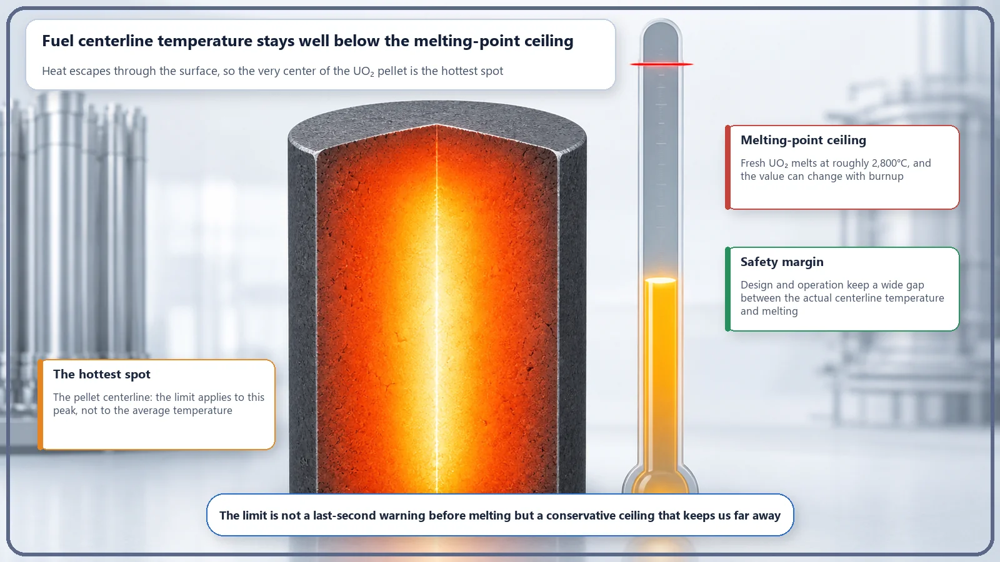
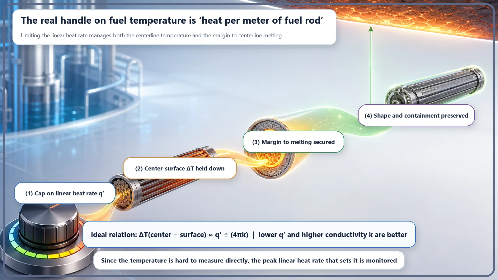

Long-Term Core Behavior & Fuel Cycle · 170
Still a Long Way from Melting — Fuel Temperature Limits, the Invisible Ceiling in a Reactor
Like an iron set safely below the fabric's scorching point, reactor fuel always runs well below its melting temperature, with a generous margin kept in reserve.

A fuel temperature limit keeps the hottest point of the fuel, the pellet centerline, well below the melting temperature of uranium dioxide (roughly 2,800°C). Because the center-to-surface temperature difference depends on the heat produced per meter of fuel rod, not on pellet size, the limit is managed in practice by capping the linear heat rate (kW/m).
Ever done any ironing? You don't set the iron to the same temperature for a silk blouse and a pair of heavy jeans. Silk scorches yellow at the slightest excess heat, so you keep it low; jeans need real heat to get the wrinkles out, so you turn it up. But either way, there's one thing we all do without thinking: we set the iron comfortably below the temperature at which the fabric starts to scorch. Nobody irons right at the edge of burning; we leave room, "just in case."
Nuclear fuel inside a reactor gets exactly the same treatment. Fuel, too, has "a temperature above which things go wrong," and real operation always takes place well below it, with room to spare. Today's topic, fuel temperature limits, is the story of that invisible ceiling that says "this far and no further."
Fuel has its own "scorching point"
The star that produces heat in a reactor is the fuel pellet, a small cylinder about the size of a fingertip. It's usually made of a ceramic called uranium dioxide (UO₂). Think of ceramic as something like pottery: very hard and highly resistant to heat. But no material withstands heat forever, and this one too starts to melt at roughly 2,800°C.
Why would melting fuel be a problem? Pellets have to keep their shape so that coolant (water) can flow around them and carry the heat away; if they melt and slump, the very surfaces that need cooling disappear. On top of that, the pellet also acts as the first fence holding in the radioactive material produced by fission, and that fence must not melt down. So reactor designers set one simple but firm principle: "Under any circumstances, the center of the fuel must not even approach its melting temperature." That's the root of fuel temperature limits.
The hottest spot is the very center of the pellet
"Fuel temperature" makes it sound as if the whole pellet is equally hot, but it isn't. Fission heat is generated evenly throughout the pellet's volume, yet the only way out for that heat is through the outer surface. So the surface, handing heat straight to the coolant, stays relatively cool, while the very center (the centerline), where heat has the farthest to travel to reach the surface, is the hottest.
So what we really need to watch isn't the pellet's average temperature but the hottest point: the centerline temperature. If the centerline stays well below the melting point, everything else is cooler and therefore automatically safe. That's why fuel temperature limits always single out the "centerline temperature."

The real handle that sets the temperature
So what raises or lowers this centerline temperature? An iron has a dial, but a fuel pellet doesn't. Instead, there's a rather fascinating fact.
The temperature difference between the center and the surface of a pellet, surprisingly, doesn't depend on whether the pellet is thick or thin. It is set only by how strongly one meter of fuel rod produces heat. This "heat per meter" is called the linear heat rate (also linear power density), and its unit is kW/m (kilowatts per meter). Written very simply:
Center-to-surface temperature difference ≈ linear heat rate ÷ (4 × π × thermal conductivity)
The bigger the linear heat rate on top (the heat each meter produces), the larger the temperature difference; the bigger the thermal conductivity underneath (how easily the material lets heat through), the smaller the difference. The key point is that the pellet diameter appears nowhere in this formula. So how hot the fuel gets is ultimately decided by one handle: "how hard each meter is run."
That's exactly why, in practice, fuel temperature limits are easier to manage not directly as a temperature (°C) but by putting an upper limit on the linear heat rate (kW/m). Decide that "no meter of any fuel rod will be run harder than this," and the centerline temperature is automatically held below the ceiling.
So how much margin is there really?
During normal full-power operation, the pellet centerline temperature sits nowhere near the melting point, but more than 1,000°C below it. In ironing terms, it's like a fabric that scorches at 200 degrees being ironed at under 100. That's how generous the margin is.
Why leave so much room? Because things don't always go to plan. During operation, power can rise a little for a moment, and spots where heat is unusually concentrated can appear in the core. And as fuel is used for a long time, its melting temperature itself drops very slightly. For there to be distance left to the melting point even after all these unexpected swings, the only way is to keep a thick margin in reserve at all times. A large part of what designers and operators do is confirming and protecting that this margin never disappears, whatever the situation.

Points that often cause confusion
First, you might ask, "If it's a fuel temperature limit, isn't it enforced by measuring the pellet temperature with a thermometer?" In reality, you can't put a thermometer in the middle of a pellet. That's why, as just described, it's managed by converting it into an easier quantity to handle, the linear heat rate. Rather than measuring the temperature directly, you hold on to the cause that sets the temperature.
Second, you may have heard that "it's dangerous if the coolant outside the fuel surface can't carry the heat away" (a phenomenon called critical heat flux, or DNB). That and today's temperature limit are about different locations. Today's story is about keeping the inner center of the pellet from melting; DNB is about whether water can properly take heat away at the outer surface. Both share the big goal of "not letting things get too hot," but they watch different places and deal with different quantities.
Finally, slightly exceeding the temperature limit doesn't mean an accident happens instantly. The limit is a line drawn generously and conservatively, meaning "past here we start eating into the margin, so stop before that." There's no need to exaggerate the danger, nor to get careless because the margin exists.
Today's takeaways
- A fuel temperature limit is an upper criterion that keeps the centerline temperature, the hottest point of the fuel (UO₂ ceramic), always below its melting temperature (roughly 2,800°C) with ample margin.
- Because a pellet is hottest at its center, what must be watched is the centerline temperature, not the average.
- The center-to-surface temperature difference is set not by pellet thickness but by "the heat produced per meter of fuel rod" (linear heat rate, kW/m), so the temperature limit is actually managed by capping the linear heat rate.
- In normal operation the centerline temperature is kept more than 1,000°C below the melting point, a generous margin meant to remain even after unexpected power swings, local heat concentration and the drop in melting point with burnup.
- This temperature limit is a basic margin running through design and operation, keeping the fuel's shape and the first barrier that holds in radioactive material intact.
To understand why reactors are designed and operated the way they are, it helps to look one by one at lines like this, "barely visible from outside, but always being kept." The fuel temperature limit is one of those lines.